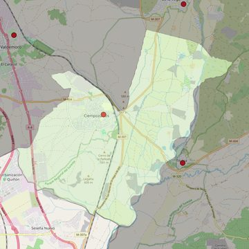

Santa María Magdalena
- Arciprestazgo
- Valdemoro
- Población
- Ciempozuelos
- Dirección postal
- Pza. Ventura Rodríguez, 6
- Código postal
- 28350
- Extensión
- 49,46 km² (4.946 ha)
- Teléfono
- 918 943 117
- Correo electrónico
- pstamariamagdalena@gmail.com
- Información demográfica
- De la parroquia · De la población (Ciempozuelos) · Del arciprestazgo (Valdemoro)


Descargar mapaLímites según decreto
Los del término municipal